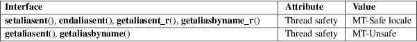

setaliasent, endaliasent, getaliasent, getaliasent_r, getaliasbyname, getaliasbyname_r − read an alias entry
Standard C library (libc, −lc)
#include <aliases.h>
void
setaliasent(void);
void endaliasent(void);
struct
aliasent *getaliasent(void);
int getaliasent_r(struct aliasent *restrict
result,
char buffer[restrict .buflen],
size_t buflen,
struct aliasent **restrict res);
struct
aliasent *getaliasbyname(const char *name);
int getaliasbyname_r(const char *restrict
name,
struct aliasent *restrict result,
char buffer[restrict .buflen],
size_t buflen,
struct aliasent **restrict res);
One of the databases available with the Name Service Switch (NSS) is the aliases database, that contains mail aliases. (To find out which databases are supported, try getent −−help.) Six functions are provided to access the aliases database.
The getaliasent() function returns a pointer to a structure containing the group information from the aliases database. The first time it is called it returns the first entry; thereafter, it returns successive entries.
The setaliasent() function rewinds the file pointer to the beginning of the aliases database.
The endaliasent() function closes the aliases database.
getaliasent_r() is the reentrant version of the previous function. The requested structure is stored via the first argument but the programmer needs to fill the other arguments also. Not providing enough space causes the function to fail.
The function getaliasbyname() takes the name argument and searches the aliases database. The entry is returned as a pointer to a struct aliasent.
getaliasbyname_r() is the reentrant version of the previous function. The requested structure is stored via the second argument but the programmer needs to fill the other arguments also. Not providing enough space causes the function to fail.
The struct aliasent is defined in <aliases.h>:
struct aliasent
{
char *alias_name; /* alias name */
size_t alias_members_len;
char **alias_members; /* alias name list */
int alias_local;
};
The functions getaliasent_r() and getaliasbyname_r() return a nonzero value on error.
The default alias database is the file /etc/aliases. This can be changed in the /etc/nsswitch.conf file.
For an explanation of the terms used in this section, see attributes(7).

GNU.
The NeXT system has similar routines:
#include <aliasdb.h>
void
alias_setent(void);
void alias_endent(void);
alias_ent *alias_getent(void);
alias_ent *alias_getbyname(char *name);
The following example compiles with gcc example.c −o example. It will dump all names in the alias database.
#include
<aliases.h>
#include <errno.h>
#include <stdio.h>
#include <stdlib.h>
int
main(void)
{
struct aliasent *al;
setaliasent();
for (;;) {
al = getaliasent();
if (al == NULL)
break;
printf("Name: %s\n", al−>alias_name);
}
if (errno) {
perror("reading alias");
exit(EXIT_FAILURE);
}
endaliasent();
exit(EXIT_SUCCESS);
}
getgrent(3), getpwent(3), getspent(3), aliases(5)